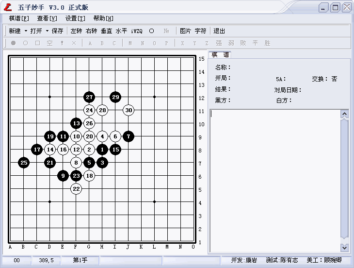

五子妙手V3.0正式版横空出世，超多功能等您挖掘
#1 五子妙手V3.0正式版横空出世，超多功能等您挖掘 作者：小丸.net 发表时间：2007-10-21 12:19:51
************************************************************************
软件名称：五子妙手 互动棋谱软件
软件版本：V3.0 正式版
软件作者：康岩[小丸.net]
软件类型：免费软件(永久免费)
************************************************************************
软件简介：五子妙手是五子棋爱好者不可少的研习打谱软件，他强大的功能可以为您在学习五子棋时起来事半功倍的作用。
重要，在安装本软件之前先下载“泄露版”将原来库中所有的数据导出为SGF谱，然后在３．０正式版中导入，可以防止您的数据丢失

点击这里下载花月妙手V3.0正式版
开发历史：
V3.0正式版新功能
1.增加了输出带详细资料的SGF（ORC）谱的功能。
2.增加了批量导入多种谱的功能
3.增加了批量导出POS,SGF谱的功能。
4.增强了棋谱类别管理的功能
5.在摆棋模式下可以像RENLIB那个按下CTRL键在盘面上输入字符的功能
6.增加了自定义显示数字与显示数字序号的功能
7.修正了棋谱的各项重要参数。
8.增加了导出图片添加水印的效果。水印的透明度、图片可以自由选择
9.新增了一千多个棋谱
V3.0预览版
1.去除了冗余的ORC阅读功能，本站将开发专业的ORC阅读操作工具
2.去除了冗余的棋谱分析功能，该功能在网站提供
3.美化了界面，软件界面特邀上海知名女棋手顾婉卿四段制作;
4.支持打开IWZQ棋谱
5.兼容了iWZQ网站的棋谱
V2.5 正式版 新增功能
1.软件改名为：五子妙手 更新的新图标，更改了新界面
2.兼容iWZQ网站的风格界面
3.修改了不能打开网站打包棋谱的bug
4.增加手动阅读教室功能
5.棋盘可以无限缩放任何大小
6.支持导出POS,SGF格式文件
v2.5 BETA 1新增功能：
１．增加导出文字棋盘
２．增加棋盘旋转功能
３．修改了一些小错误
４．增加生成iWZQ代码
V2.1正式版
1、增强棋谱管理功能，用目录树结构替代现在的列表结构。
2、棋谱提供备份，载入功能；
３、支持打开边烽、联众棋谱
４、支持保存系统所有设置
v2.0 beta1
薄⒌髡了界?lt;BR>２、增加导出图形文字棋谱的功能
３、重新修改导出rena谱，使软件通用化
４、棋谱增加删除功能
５、增加了几个漂亮的皮肤
V2.0
１、代码全部重写、界面更美观
２、增加打开ORC游戏棋谱、并支持多文件打开
３、互动棋谱支持更新
４、随心所欲改变棋盘，棋子、坐标颜色，以不同的颜色输出棋谱
v1.6b2025
１、增加打开ＰＯＳ棋谱、并支持多文件打开
２、修改了数字显示的位置
３、互动棋谱刷新
４、互动棋谱增加自由打谱功能
５、支持导出rena互动棋谱功能、与网站整合
６、增加了安装程序、安装更方便
v1.5
１、打开ＱＱ棋谱、中游棋谱、并支持多文件打开
２、增加摆棋模式
３、增加测试模式
４、增加调试模式[内部版]
５、增加了互动棋谱浏览功能
v1.0
１、软件支持在线打谱
２、支持新建空白谱、数据库谱、图形谱
３、支持显示与非显示信息框
４、支持导出字串谱、数据库谱、图形谱
┏┯┯┯┯┯┯┯┯┯┯┯┯┯┓15
┠┼┼┼┼┼┼┼┼┼┼┼┼┼┨14
┠┼┼┼┼┼┼┼┼┼┼┼┼┼┨13
┠┼┼＋┼┼┼┼┼┼┼＋┼┼┨12
┠┼┼┼┼┼┼┼┼┼┼┼┼┼┨11
┠┼┼┼┼┼○┼●○●┼┼┼┨10
┠┼┼┼┼┼●○●○○○┼┼┨9
┠┼┼┼┼┼○●┼●●●┼┼┨8
┠┼┼┼┼┼○┼○●●┼┼┼┨7
┠┼┼┼┼┼┼┼┼┼┼┼┼┼┨6
┠┼┼┼┼┼┼┼┼┼┼┼┼┼┨5
┠┼┼＋┼┼┼┼┼┼┼＋┼┼┨4
┠┼┼┼┼┼┼┼┼┼┼┼┼┼┨3
┠┼┼┼┼┼┼┼┼┼┼┼┼┼┨2
┗┷┷┷┷┷┷┷┷┷┷┷┷┷┛1
A B C D E F G H I J K L M N O
#2 Re:五子妙手V3.0正式版横空出世，超多功能等您挖掘 作者：147852 发表时间：2007-10-22 11:27:56
你好！怎么才能导出所有数据然后变为SGF谱啊？
#3 Re:五子妙手V3.0正式版横空出世，超多功能等您挖掘 作者：小丸.net 发表时间：2007-10-22 13:59:47
在设置菜单下有个棋谱库维护 ，可以导出一个类别的棋谱为SGF文件。
#4 Re:五子妙手V3.0正式版横空出世，超多功能等您挖掘 作者：yidefei 发表时间：2007-10-24 20:43:49
真是好用，导出图片很是方便，这样的话有的时候想要打印棋谱时很有用处。谢谢
#5 Re:五子妙手V3.0正式版横空出世，超多功能等您挖掘 作者：小冰怡 发表时间：2007-10-25 9:55:24
辛苦啦 要呆以学到好多东东啦#6 Re:五子妙手V3.0正式版横空出世，超多功能等您挖掘 作者：yidefei 发表时间：2007-10-28 12:45:52
对了，能不能在以后的版本中把以前做的一些备份棋谱放到里面去呢？这样的话就只要下载最新版本就能拥有以前的备份资料了。#7 Re:五子妙手V3.0正式版横空出世，超多功能等您挖掘 作者：水月 发表时间：2007-10-29 12:30:10
 我帮小丸测试了。。。有奖励么？
我帮小丸测试了。。。有奖励么？